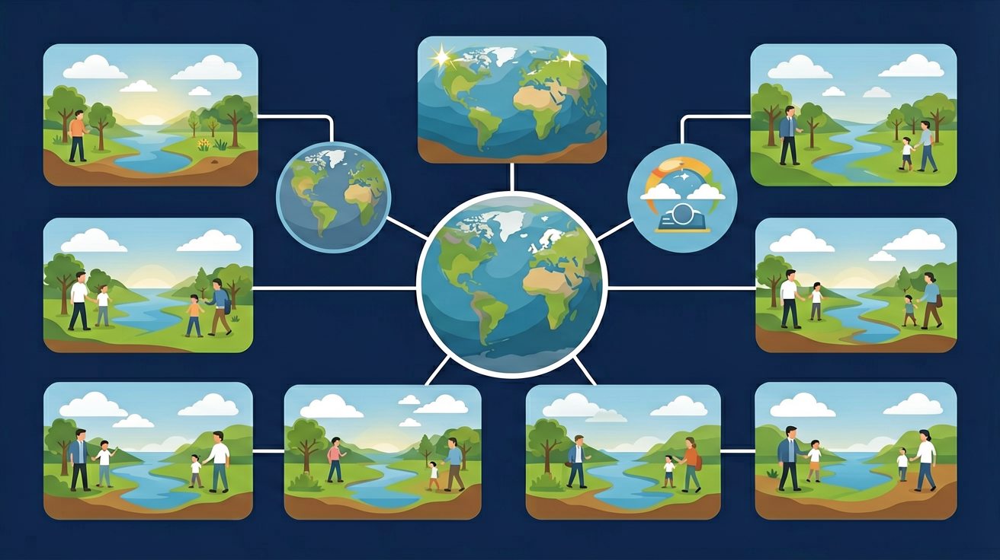

你知道不同地方气候不同 · 但不清楚为什么从赤道到极地植被会规律性变化 · 自然地理环境的地域分异规律（纬度地带性、经度地带性、垂直地带性）解释这一切
说出三种分异规律的名称及主导因素
能判断某地属于哪个自然带
对比不同自然带的气候—植被—土壤特征
❓ 为什么我家这边没有热带雨林？
❓ 沙漠和草原到底哪里不一样？
❓ 为什么爬山时看到的植物会变化？
学完这一课，这些问题你都能自信地回答。
从赤道到极地的地域分异，主导因素是？
And：学生知道赤道热两极冷
But：不理解温度如何影响植被类型
Therefore：揭示热量分布决定自然带
从赤道到两极，太阳辐射逐渐减少，形成不同的温度带。每相差10℃年均温就会产生明显植被变化，比如我国海南岛（热带季雨林）到黑龙江（寒温带针叶林）跨越了5个温度带。纬度每升高1度，年均温下降约0.6℃，这个规律叫纬度地带性。
🌍 冬天去三亚穿短袖，回哈尔滨要裹羽绒服——这就是纬度差异！两地直线距离约3000公里，温差能达到40℃。
下列哪地属于亚热带常绿林？
点击时代按钮切换疆域版图；悬停高亮边界；点击红色城市标记查看详情。
选择三个不同纬度的地区（如赤道、北纬30°、北极），比较它们的自然特征
And：学生见过沙漠和森林图片
But：不知道降水如何改变景观
Therefore：破解水分控制自然带秘密
从沿海到内陆，降水逐渐减少形成不同干湿区。每减少200mm年降水量就会出现新植被类型，比如我国从山东沿海（落叶阔叶林）到甘肃敦煌（荒漠）的景观变化。沿海500mm降水线是森林与草原的分界线，这个规律叫经度地带性。
🌍 暑假从上海坐高铁去兰州，窗外的绿色越来越少，最后看到骆驼——这就是干湿差异！这段路程降水减少了1000mm。
年降水800mm地区典型植被是？
And：学生知道山上比山下冷
But：不了解海拔如何形成自然带
Therefore：探索立体气候带奥秘
海拔每升高100米，气温下降0.6℃，相当于水平距离往北走100公里。比如玉龙雪山从山脚（亚热带）到山顶（积雪带）只有5公里，却浓缩了从海南到北极的7个自然带。这种'一山有四季'的现象叫垂直地带性，前提是山地要足够高（通常＞3000米）。
🌍 爬黄山时，山脚穿T恤出汗，山顶租军大衣还发抖——这就是垂直差异！一天体验四季。
海拔3000米高山可能出现？
将自然带拆解为气候+植被+土壤的组合
太阳辐射和水分条件共同塑造自然带
对比热带雨林与落叶阔叶林的群落特征差异
在卫星地图上识别不同自然带的色彩边界
用垂直分异规律解释高山徒步的植被变化
先独立作答，再点选项查看对错与错因。
下列哪一因素对纬度自然带的形成影响最大？
下列哪个自然带主要分布在南北纬30°附近？
北极苔原带植被矮小的主要原因是？
地球上自然带的分布主要遵循____地带性规律
答案：纬度
自然带主要随纬度变化而变化
热带雨林带的典型气候特征是____
答案：全年高温多雨
热带雨林带位于赤道附近，受赤道低压带控制
温带荒漠带出现在内陆地区，体现了哪种分异规律？
有疑问？点击提问！
✅ 寒带还包括苔原带
💡 忽略夏季短暂生长期
✅ 草原带年降水量＞200mm
💡 混淆干旱程度指标
口诀：纬度海拨定基调，水热组合画线条
类比：自然带像彩虹蛋糕，每一层都有固定配方
复制提示词到 AI 学伴，生成「自然地理环境的差异性（自然带）」的示意图或结构提纲；也可以上传你手绘的示意图，请 AI 学伴点评。
复制后可粘贴到 AI 学伴继续对话。